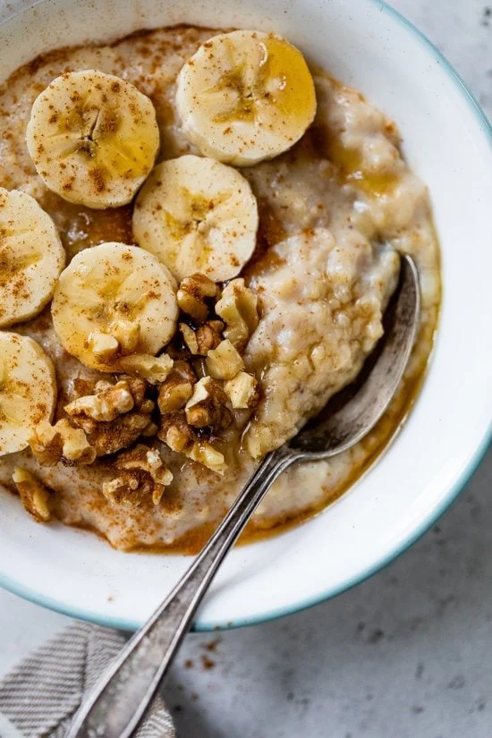

Banana Protein Bowl

Ingredients
- 2 Eggs Whites
- 2 Bananas
- 1 Scoop Vanilla Protein Powder
- 1/8 tsp. Cinnamon
- 30 grams Oatmeal
- 2/3 cup Water
- 17 grams crushed walnuts
Steps
- Mash one of the bananas and put in small pot.
- Add protein powder, cinnamon, egg whites, water and oatmeal and mix together
- Heat over low heat until cooked through, about 8 minutes
- Cut up second banana into thin slices and add on top with crushed walnuts
Enjoy!